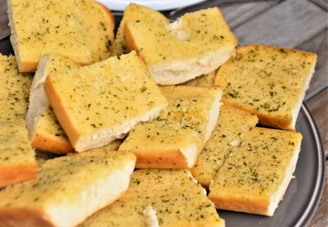

Home
Garlic Bread

Description
Garlic bread consists of bread, topped with garlic and olive oil or butter and may include additional herbs,
such as oregano or chives. It is then either grilled until toasted or baked in a conventional or bread oven.
Ingredients
- 1/2 cup/8 tablespoons unsalted butter (1 stick), melted
- 4 fat garlic cloves, grated
- 1/2 cup Parmesan, grated
- 1/4 cup firmly packed chopped flat-leaf parsley
- 1/4 teaspoon kosher salt
- 1/4 teaspoon black pepper
- 1 baguette or rustic crusty loaf
- 1/2 pound fresh mozzarella, thinly sliced (optional)
Directions
- Heat the oven to 400 degrees. In a small bowl, stir together the butter,
garlic, Parmesan and parsley. Add the salt and generously season with
pepper. Set aside while you cut the baguette.
- Cut deep slits into the baguette, 1-inch apart — don’t cut all the way
through the loaf — and place the baguette on a large piece of foil. Using
a teaspoon or an offset spatula, generously spread the seasoned butter
inside each slit. Make sure to reach the bottom of the slit; don’t be shy
here.
- Wrap the baguette in the foil, place on a baking sheet and bake for 15
minutes. Remove the baguette from the oven and unwrap the top (leave
the bread on the foil). If you’re adding mozzarella, use the offset spatula
or spoon to gently open each slit and tuck a piece of mozzarella in (it’s
O.K. if the cheese pops out from the top a little). Return bread to the
oven and bake until crisp and golden on top, another 5 minutes. Slice
with a serrated knife (or tear with your hands) and serve at once.
Source
Image courtesy of Waldemar Brandt, Unsplash